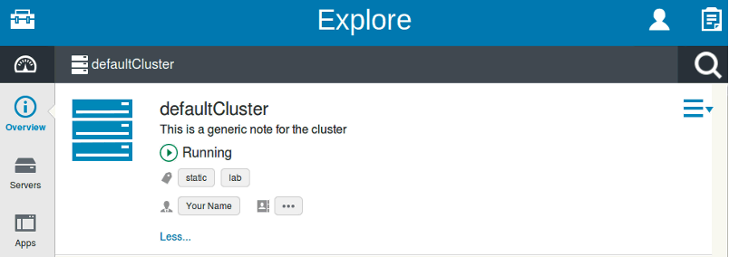

Thanks for all your support for our beta program so far. Here’s the latest beta of WebSphere® Application Server Liberty Profile and WebSphere Developer Tools (WDT). This one’s a biggie!! If you’re coming to InterConnect 2015 in Vegas next week, drop by and let us know what you think in person.
Look out for more betas over the coming months. Some of the features in previous betas are now available and supported in production in WebSphere Application Server Liberty Profile V8.5.5.
Get it now! Give feedback on dWAnswers
What’s in the Liberty beta for February 2015?
In the February 2015 Liberty beta, we’ve added the following goodies for you…
Java EE 7
- Context and Dependency Injection (CDI) 1.2 Provides support for the CDI 1.2 specification.
- Most of the CDI 1.2 features are available in the beta (e.g. global enablement of interceptors, binding interceptors to constructors, @Vetoed or class exclusion filters to beans.xml to prevent scanning of classes and packages). Note that the automatic enablement of CDI for beans with bean defining annotations is not enabled in this beta i.e. it is still necessary to define a
beans.xmlto enable CDI. - There’s a new CDI 1.2 level facet that enables CDI tooling on Java EE 7 level projects:
- There’s also a new action that enables you to generate the
beans.xml:
- The
beans.xmlcan then be edited in the CDI 1.2 deployment descriptor editor:
- Most of the CDI 1.2 features are available in the beta (e.g. global enablement of interceptors, binding interceptors to constructors, @Vetoed or class exclusion filters to beans.xml to prevent scanning of classes and packages). Note that the automatic enablement of CDI for beans with bean defining annotations is not enabled in this beta i.e. it is still necessary to define a
- JSP 2.3 and EL 3.0 The JSP 2.3 feature provides access to El3.0 functionality and enables exploitation of Servlet 3.1 features from a JSP.
- The EL 3.0 feature provides an implementation of the EL 3.0 specification and can be used as a stand-alone feature.
- Some of the new capabilities of EL 3.0 are: lambda expression, operations on collections, and static field and method references.
- Note: In the February beta the JSP 2.3 and EL 3.0 features cannot be used with other features which currently require JSP-2.2, for example JSF 2.0, CDI 1.0 and CDI 1.2.
- Java EE Application Client Provides Java EE client container support.
- Run Java EE client applications inside a client container. You can use the client command
client create client_nameto create a client, which will create a defaultclient.xmlwith the feature added. Once you have your client application module (.jar) packaged in a.earfile, you will update theclient.xmlfile by adding a<application/>or a<enterpriseApplication/>config element. Once, this is done you can useclient run client_namecommand to run your client application.
- Run Java EE client applications inside a client container. You can use the client command
- JASPIC 1.1 – Java Authentication SPI for Containers (JSR 196) Now you can configure Liberty to use your JASPIC provider to perform authentication for incoming web requests.
- JACC 1.5 – Java Authorization Contract for Containers (JSR 115) Now you can configure Liberty to use your JACC provider to delegate the authorization decision.
- EJB 3.2 EJB 2.x modules with EJBLocalHome are now supported. There is no support for remote EJB or entity beans.
- JCA 1.7 Full support for the JCA 1.7 specification. Capabilities added include:
- Deployment of JCA 1.7 compliant resource adapters
- Backwards compatibility with all previous JCA specification levels (1.0, 1.5 and 1.6)
- Support for the resource definition annotations @ConnectionFactoryDefinition, @AdministeredObjectDefinition, @ConnectionFactoryDefinitions and @AdministeredObjectDefinition, allowing developers to define required resources in their applications and application clients, avoiding the need to manually configure them in the server.
- JavaMail Provides a JSR 919 implementation to send, receive, and manage email in their applications.
- WebRTC A new angular-rtcomm open source module is available. For more info about WebRTC and Liberty, see WASdev.net/webrtc.
{kind=link}
{kind=link}
{kind=link}
Operations
- assetManager command assetManager is an one-stop shop for repository-based asset management. You can use it to install features from the local, remote (on-premise), and the IBM-hosted WebSphere Liberty Repository. Also, you can use it to deploy a server package and it will install the required features automatically.
- Liberty Asset Repository Service (LARS) LARS implements a repository for Liberty features that you can deploy locally. You can host features you have developed and features retrieved from the Websphere Liberty Repository and then use the new
assetManagercommand to install them into your Liberty servers. LARS is available as an open source project on GitHub. - Event logging Creates log entries for any servlet request, JDBC request, or for HTTP get/set attribute requests. You can control which of these event types gets logged, and can set a minimum duration to trigger the events to be logged. This can be very useful for detecting when something is running more slowly than you expected.
- Request timing Provides slow request detection and hung request detection capabilities.
- The slow request detection feature will watch your Liberty server to see if any requests (currently only servlet requests) are running slowly. For requests that are still running beyond the configurable duration, slow request detection will write a log entry giving details about the request that is running slowly, as well as all of the events that have occurred, or are still running related to that request. It also provides a stack trace for the thread the request is running on, so you can see more clearly what’s happening on that thread at that moment.
- The hung request detection feature will watch to see if any requests (currently only servlet requests) hang. For requests that are still running beyond the configurable duration, hung request detection will write a log entry giving details about the request that is hung (like the one above). In contrast to slow request detection, hung request detection will trigger a set of 3 javacores to be automatically created so you can properly diagnose the cause of the hang.
- The slow request detection feature will watch your Liberty server to see if any requests (currently only servlet requests) are running slowly. For requests that are still running beyond the configurable duration, slow request detection will write a log entry giving details about the request that is running slowly, as well as all of the events that have occurred, or are still running related to that request. It also provides a stack trace for the thread the request is running on, so you can see more clearly what’s happening on that thread at that moment.
- Auto-scaling for Liberty When the auto-scaling policy requires more Liberty servers than are deployed, Liberty elasticity provisions software stacks to collective member hosts. This capability eliminates the need to pre-configure Liberty servers for auto-scaling.
- Analytics collector feature Gathers log content from your system, including messages.log, trace.log, access logs, binary logs and FFDC files, and forwards it to the analytics engine for indexing. This feature, when used with the analytics engine and Admin Center features, provides a basic log analytics capability for your Liberty server. See further information below under metrics updates on how the analytics data is exploited in the Explore tool.
- Analytics engine feature Indexes content sent to it from the analytics collector and provides responses to analytics queries from the Admin Center Explore tool. This feature, when used with the analytics collector and Admin Center features, provides a basic log analytics capability for your Liberty application server. See further information below under metrics updates on how the analytics data is exploited in the Explore tool.
- Configuration dropins You can now dynamically add configuration to the server by placing configuration files in a dropins directory. Place files in
/usr/servers/{server name}/configDropins/overridesto add configuration that will take precedence over any conflicting configuration inserver.xml. Ifserver.xmlshould take precedence over the dropin configuration, place the files in/usr/servers/{server name}/configDropins/defaults.
{kind=link}
{kind=link}
WebSphere Developer Tools
- Liberty Repository integration You can download assets (eg samples, features) from the Liberty Repository via a proxy. Configure the proxy server settings by selecting Window > Preferences > General > Network Connections in Eclipse.
- Debugging on remote Liberty servers When you start a remote Liberty profile server in debug mode, you can specify which debug port to use in the Remote Start Settings section of the server editor. You can now specify exactly what port the server will use for debugging without having to leave the comfort of your local Eclipse workbench. It’s especially handy when dealing with firewalls.
{kind=link}
Admin Center
- Metrics updates
- Log analytics graphs added to the Admin Center metrics page to show analytics data about the server.
- Includes histograms for message count, access Log messages, server log messages, trace messages and FFDC messages.
- Also tables for log messages, trace messages and FFDC messages. The tables have a search function which allows records to be filtered for particular strings.
A table of response statistics for the 10 most invoked endpoints.
- There’s also now a time selector panel so you can quickly narrow the time selection ranges for the graphs.
- Tagging and searching Create relationships and groups between resources with free-form text tags which can be assigned to servers and clusters. Tags, along with other criteria, and can now be searched on.

- Scalability for large numbers of servers (10K) Admin Center’s Explore tool has new support for large scale topologies. In this beta version, there is new support for WebSocket-based push notifications for changes (enabled with adminCenter-1.0 and websocket-1.0 features) and improved performance when rendering the dashboard view.
- Configure tool This new tool provides a web based graphical user interface that makes it possible to view and edit server configuration files. It has been design to work on desktop and mobile devices.
- Accessing and updating server configuration files is now easier and faster. The tool visually shows all of the configuration settings available on the server with inline documentation. If you prefer to work directly with XML, the tool also provides a source view editing mode with syntax highlight and content assist.

- Accessing and updating server configuration files is now easier and faster. The tool visually shows all of the configuration settings available on the server with inline documentation. If you prefer to work directly with XML, the tool also provides a source view editing mode with syntax highlight and content assist.
{kind=link}
{kind=link}
{kind=link}
{kind=link}
{kind=link}
{kind=link}
{kind=link}
{kind=link}
{kind=link}
And, of course, a bunch of bug fixes.
What’s already in there?
In the January beta, we added updates to SipServlet as well as bean validation tools, WebSocket 1.1 support, metrics in Admin Center, and an uninstall option in featureManager.
In earlier betas, we added SIP Servlets 1.1 and tools, SPNEGO support, OSGi App integration, JDBC 4.1, OSGi & Web 3.1 facet configuration for OSGi bundles, and JAX-RS 2.0 client wizard; we fixed a shedload of bugs and added things like support for remote development, auto-scaling and dynamic routing, Real-Time Communications (WebRTC) and CouchDB; finally, there was JAX-RS 2.0, Java Batch, JMS 2.0, JPA 2.1, bean validation 1.1, JSON-P 1.0, EJB 3.2 Lite, concurrent-1.0, Servlet 3.1, OpenID Connect, Java 8 toleration, WebSockets, a facelift for the Liberty Repository…
Go take a look at the previous beta announcements for a full list: